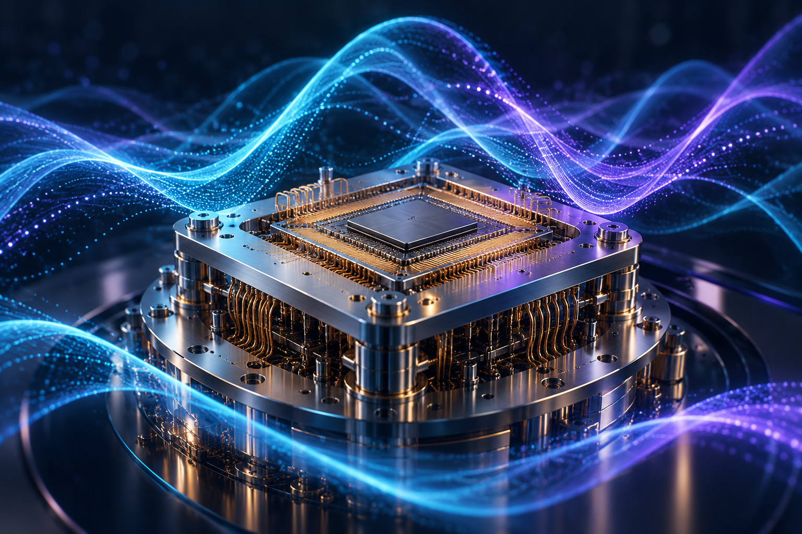

Practical engineering
Prepared network configurations, supported field work, and checked physical and logical connectivity under engineering supervision.
ENGINEERING PORTFOLIO
I’m Muhannad Alzahrani, a Computer Engineer with practical experience in industrial networking and cybersecurity. Explore the problems I worked on, my contribution, and why each project matters.
Explore projectsFEATURED GRADUATION PROJECT

Helping important industrial computers communicate through a secure, organized network. My contribution covered configuration, installation support, verification, and documentation.
Explore the graduation projectConfidentiality respected: the image and project explanation use educational analogies, not actual SABIC/YANSAB facilities or systems.
ACADEMIC PROJECTS
A simulated company network that lets three offices share services while keeping department access organized.
Explore projectA model that decides who can open a company resource, using the person’s role and the circumstances of the request.
Explore project
A small working barrier that detects an approaching object and opens automatically.
Explore projectTwo ways a computer chooses which waiting task receives processor time next.
Explore project
Research explaining what quantum computing could do, where it may help, and what limits it.
Explore projectCover images are AI-generated concepts. Project pages contain original evidence and illustrative examples.
ABOUT ME
Computer Engineer · Networking & Cybersecurity
I’m a Computer Engineering graduate from Yanbu Industrial College. My experience at YANSAB, a SABIC affiliate, connected networking and industrial cybersecurity concepts with practical configuration, installation support, connectivity verification, and technical documentation. I bring hands-on engineering experience, team leadership, and the ability to explain complex work clearly.
Prepared network configurations, supported field work, and checked physical and logical connectivity under engineering supervision.
Worked with network separation, device-access restrictions, controlled administration, and consistent security settings.
Led an academic security-project team and presented technical research with a teammate to a visiting ABET committee.